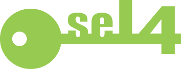
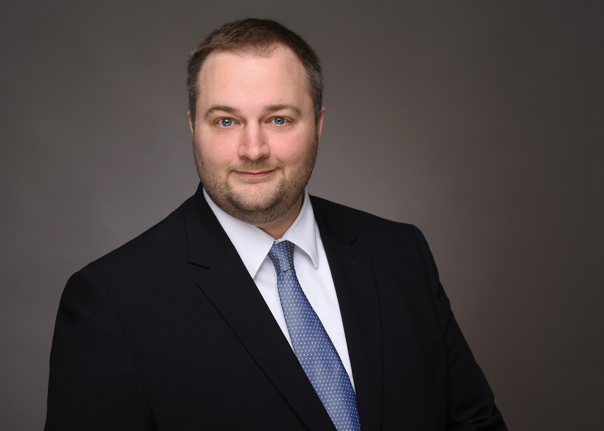
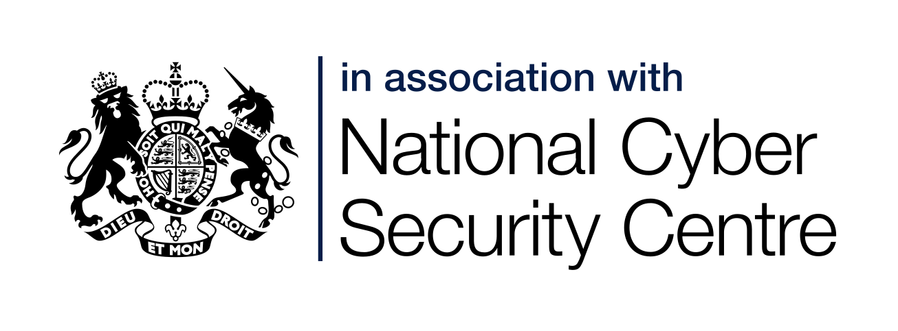
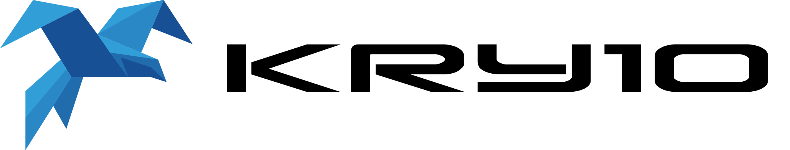

News about seL4 and the seL4 Foundation
A reminder that you have until Monday 9th of May 2022 to propose a talk for the seL4 Summit 2022.
It is our pleasure to confirm that the seL4 Summit 2022 will be in:
Munich, Germany in the week of Oct 10th, 2022
It will be hosted by seL4 Foundation member Hensoldt Cyber. It will be a hybrid in-person/online event. If you'd like to propose a talk to be delivered remotely, please notify it in the submission.
Remember that you have until Monday 9th of May 2022 to propose a talk.
Share your seL4 work
Share your seL4 experience
Share your seL4 thoughts
Share your seL4 questions

The Linux Foundation has registered seL4® as a trademark in the United States and other countries. We encourage the use of the seL4® name and logo in your work, following the usage rules here.
Our second Annual General Meeting (AGM) 6 April 2022. As our membership now is truly global, covering New Zealand, Australia, China, the Middle East, Central and Western Europe, the US East, Central and West coasts, there is no time that is not in the middle of the night for some members. Hence we will hold the AGM in two sessions:
- 2022-04-06 07:00–08:30 UTC
- 2022-04-06 23:00 – 2022-04-07 00:30 UTC
We are calling for proposals to present at the seL4 Summit 2022.
Share your seL4 work
Share your seL4 experience
Share your seL4 thoughts
Share your seL4 questions
Check the full Call For Presentations. To propose a talk, send an abstract of one page or less by Monday 9th of May 2022 to summit@sel4.systems.
The seL4 Foundation is excited to have gathered a top notch team of people to serve as PC members for the seL4 summit 2022. They come from across the the seL4 ecosystem: users, contributors, committers, experts, advocates, researchers, and engineers.
Stay tuned for the Call for Presentation soon!

The seL4 Foundation is pleased to welcome Olivier Engelkes as Hensoldt Cyber's new representative on the seL4 Foundation Board.
Olivier is Head of Engineering at HENSOLDT Cyber GmbH, premium member of the seL4 Foundation and Munich-based company which develops embedded IT products that meet the highest security requirements, combining an operating system based on verified seL4 with a RISC-V processor that is protected from supply-chain attacks. Olivier replaces Sascha Kegreiß as HENSOLDT Cyber's representative on the seL4 Foundation Board.

The NCSC, the UK’s technical authority on cyber security, uses the seL4 Microkernel to enforce separation in a number of high-assurance situations. The government organisation is actively exploring research opportunities to further develop its seL4 use cases. NCSC Technical Director Dr Ian Levy said: "We’re pleased to join the seL4 Foundation. seL4 is some of the most highly assured software and its development plays an important role in the next generation of high-assurance devices. We support the long-term stability of the seL4 microkernel ecosystem and are looking at opportunities to develop our use cases for it."
The seL4 Foundation will be organising the fourth edition of the seL4 Summit, in October 2022.
A Program Committee will be in charge of the technical side (more on that soon) and an Hosting Team will be in charge of organising the event.
We are now calling for bids to be the Host team for the seL4 Summit 2022!
Bids should be sent to summit@sel4.systems before 22 February 2022.
More information here.
